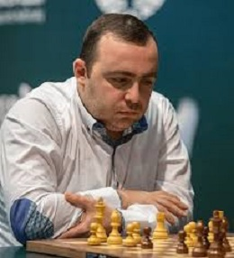
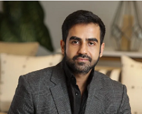
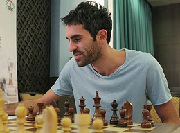
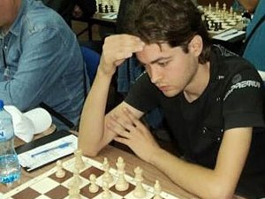
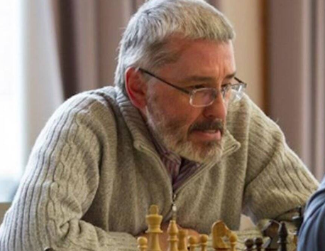

Chess Blips
The site with the most ensorcelling chess trivia!
Home
Scandals
Blunders
Contact
Notorious Scandals
——————————————————————————————————
Robert Fischer vs Boris Spassky
Akiba Rubinstein vs Aron Nimzowitsch
Alonso Zapata vs Viswanathan Anand
David Bronstein vs. Mikhail Botvinnik
Mikhail Chigorin vs Wilhelm Steinitz

27 Sep 2020
Tigran L. Petrosian vs Wesley So, Finals, PRO Chess League, online event.
For a grandmaster to accuse a fellow grandmaster of cheating is a grave insult, and one had better be damn sure they really were before lobbing that accusation.
Grandmaster Wesley so felt that Tigran was punching above his weight and acting suspiciously, frequently looking down at what could have been an off-screen cheating device. He not-so-subtly hinted in the comments that Tigran was cheating: Some commenters told Wesley he was just being a sore loser, that upsets happen and he should learn to live with it.
Tigran, on the other hand, went completely ballistic, and produced what is now one of his most beautiful contributions to chess:
"Are you kidding ??? What the **** are you talking about man ? You are a biggest looser i ever seen in my life ! You was doing PIPI in your pampers when i was beating players much more stronger then you! You are not proffesional, because proffesionals knew how to lose and congratulate opponents, you are like a girl crying after i beat you! Be brave, be honest to yourself and stop this trush talkings!!! Everybody know that i am very good blitz player, i can win anyone in the world in single game!(continues)..."
This was a perfect combination of broken English and Internet Tough Guy, now forever seared into the minds of chess enthusiasts.
Tigran's rant is a brilliancy that stands on its own. Wesley, presumably taking a moment to recover from laughing too hard, accepted Tigran's invitation to a money match: You got yourself a deal man. Anytime, anywhere. Tigran, ever the Internet "tough Guy", said in another interview that he would punch Wesley in the face if they met.
Wesley and Tigran never had their fated over-the-board battle. Tigran was eventually found to have been cheating, and disqualified from the tournament.
The Saint Louis Arch Bishops were deemed the winners, and Wesley was vindicated.

14 Jun, 2021
Viswanathan Anand vs Nikhil Kamath, Charity Event, online simul (exhibition), chess.com.
Zerodha co-founder Nikhil Kamath participated in a charity chess match against five-time world chess champion, Viswanathan Anand. To many people's surprise, he won the match. However, the billionaire later admitted to defeating the chess champion using unfair means and apologized for it.
The computer analysis of Nikhil’s play calculated his efficiency at 98.9 percent.
In a tweet he said, "[It was] one of those days that I had dreamt of when I was a really young kid learning chess, to interact with Vishwanath Anand. Got the opportunity thanks to Akshaypatra and their idea of raising funds for charity conducting a bunch of chess games with Vishy. It is ridiculous that so many are thinking that I really beat Vishy in a chess game, that is almost like me waking up and winning a 100mt race with Usain Bolt."
Following the match, Chess.com, the virtual platform that was used to play the charity game, decided to ban the account of the billionaire entrepreneur.

Feb 23, 2015
Gaioz Nigalidze vs Tigran L. Petrosian, Dubai Open
Nigalidze drew attention to himself by cheating at the 2015 Dubai Open.
Tigran L. Petrosian, his opponent in the 6th round, complained that Nigalidze had been routinely going to the bathroom during the game in a crucial position. Petrosian had also previously been suspicious of Nigalidze for similar practice when he won in Al Ain in December 2014.
He complained to Chief Arbiter Mahdi Abdul Rahim that it was unusual as he was always going to the same stall.
After checking the bathroom stall, a smartphone as well as a headset was found hidden behind a pan and beneath some toilet paper.
While Nigalizde originally denied owning the devices, the smart phone was logged into one of his social networking accounts and his current position was displayed on a program. He was expelled from the tournament.
The rules of FIDE strictly prohibit players from using electronic devices capable of communication or analysis during a game, with bans of up to 3 years for a first offence and up to 15 years for a repeat offence. He was subsequently banned for 3 years (until September 2018) and his grandmaster title was revoked. His previous tournaments were also investigated.

Apr 14, 2013
Borislav Ivanov vs. Kiril Georgiev, Tournament, Kyustendil
In April 2013, in part due to accusations levelled against Ivanov during his previous tournament victory, more than twenty Bulgarian Grandmasters and International Masters signed a petition that they will not participate in chess tournaments together with Ivanov unless special anti-cheating measures are taken. Shortly after that the Bulgarian Chess Federation banned him for four months on ethics grounds—due to comments made about other chess players rather than the suspicions of cheating. In response to the controversy, Grandmaster Veselin Topalov, ranked No. 1 in Bulgaria, stated in an interview on 21 May 2013 that there is no evidence that Ivanov is cheating, and that "it's simply stupid to blame a chess player for performing well on the board". The validity of the chess federation's decision was disputed in court and Ivanov received support from Blagoevgrad city councillors (who sent out a protest note to the chess federation) as well as public figures from other cities.
In June 2013, the administrative court of Sofia stated that the sanction imposed on Ivanov by the chess federation had violated proper legal procedures, essentially confirming that Ivanov is free to participate in tournaments. On 19 June 2013 the Bulgarian Chess Federation organized an event (including a lie detector) that was supposed to clear Ivanov from the cheating accusations, but Ivanov did not appear. In a letter addressed to the chess federation, Ivanov said that he had been unable to make it to Sofia on the chosen date due to his intended participation in the Varna Open chess tournament (enabled by the recent lifting of the four-month ban by the administrative court) in particular and his tight schedule in general.

11 Jul 2019
Igors Rausis vs Unknown, Strasbourg Open, Strasbourg, France.
In July 2019, Rausis was caught cheating in the Strasbourg Open, using a mobile phone in the toilet.
He admitted to having cheated, and announced his retirement from chess.
Prior to the incident, Rausis had been under suspicion for several months; FIDE's Fair Play Commission Secretary, Yuri Garrett, stated in a Facebook post that the Commission "has been closely following [Rausis] for months" on the basis of Ken Regan's statistical insights.
On December 5, 2019, the FIDE Ethics Commission banned Rausis from all FIDE-rated chess tournaments for 6 years, and formally revoked his Grandmaster title.